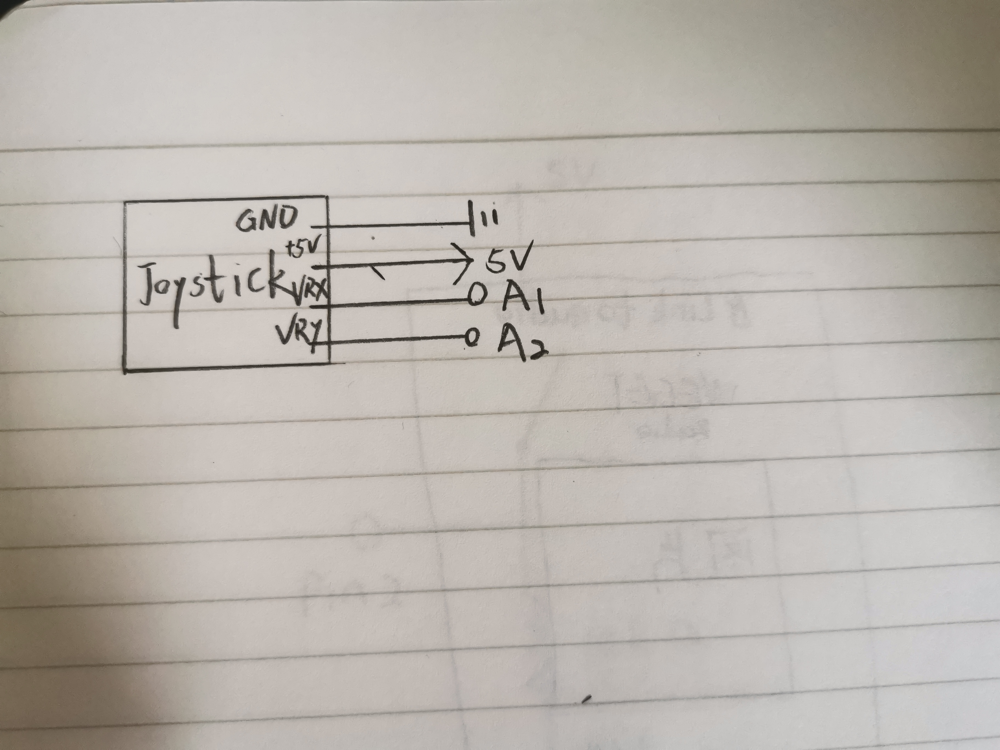
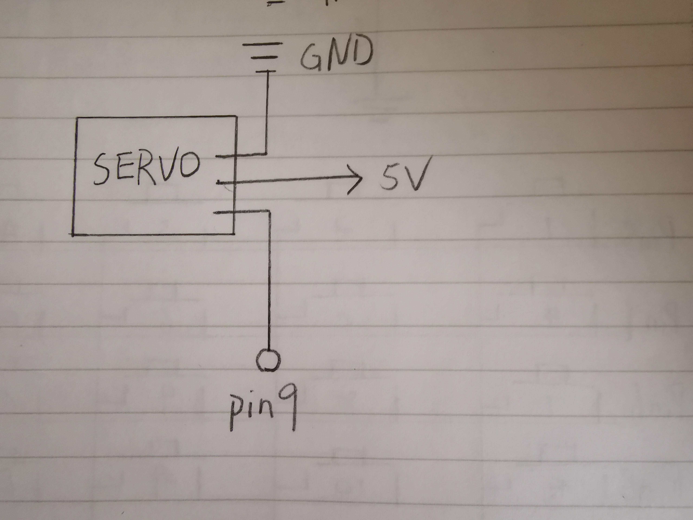

Congyi's Assignment 6!
This assignment creates a webpage with p5.js that interacts with the arduino.
Components in the circuit:
1 Servo motor
1 Joystick
Several wires
Schematic:
schematic of joystick:

schematic of Servo Motor:

Circuit:

The circuit was implemented on my breadboard. The joystick is read by pin A1 and A2. The motor is powered by 5V and connected with pin 9.
Firmware:
The program contains both an Ardunio File and a P5.js File.
They enable the Web to talk with Servo motor and the Joystick talk back to the Web.
Ardunio File:
#include
Servo myservo; // create servo object
int pos = 90; // variable to store servo position
void setup() {
myservo.attach(9); // attach servo to pin 9
myservo.write(pos); // set initial position to 90 degrees
Serial.begin(9600); // initialize serial communication
}
void loop() {
int s1 = analogRead(A1); // Read the input from pin A1 and store it as an integer
int s2 = analogRead(A2); // Read the input from pin A2 and store it as an integer
// Print an array in the serial monitor
Serial.print("[");
Serial.print(s1);
Serial.print(",");
Serial.print(s2);
Serial.println("]");
if (Serial.available() > 0) { // if the serial port has any character
int val = Serial.read(); // read the command value
if (val >= 0 && val <= 180) { // check if value is valid
pos = val; // update servo position variable
myservo.write(pos); // move servo to new position
}
}
}
P5.js File (sketch.js):
var serial;
var portName = 'COM4';
let slider;
var serial; // variable to hold an instance of the serialport library
var dataarray = []; //some data coming in over serial!
let xSlider, ySlider;
function setup() {
serial = new p5.SerialPort(); // make a new instance of the serialport library
serial.on('list', printList); // set a callback function for the serialport list event
serial.on('connected', serverConnected); // callback for connecting to the server
serial.on('open', portOpen); // callback for the port opening
serial.on('data', serialEvent); // callback for when new data arrives
serial.on('error', serialError); // callback for errors
serial.on('close', portClose); // callback for the port closing
console.log("muffin");
serial.list(); // list the serial ports
serial.open(portName); // open a serial port
createCanvas(1200, 800);
// Create sliders for controlling servo motor
slider = createSlider(0, 100, 50);
slider.position(10, 10);
// Create sliders for x and y values
xSlider = createSlider(0, width, width / 2);
xSlider.position(10, 160);
ySlider = createSlider(0, height, height / 2);
ySlider.position(10, 180);
}
// get the list of ports:
function printList(portList) {
// portList is an array of serial port names
for (var i = 0; i < portList.length; i++) {
// Display the list the console:
print(i + " " + portList[i]);
}
}
function serverConnected() {
print('connected to server.');
}
function portOpen() {
print('the serial port opened.')
}
function serialError(err) {
print('Something went wrong with the serial port. ' + err);
}
function portClose() {
print('The serial port closed.');
}
function serialEvent() {
if (serial.available()) {
var datastring = serial.readLine(); // readin some serial
var newarray;
try {
newarray = JSON.parse(datastring); // can we parse the serial
if (typeof newarray == 'object') {
dataarray = newarray;
}
} catch(err) {
}
}
}
function draw() {
background(220); // create a background
let val = map(slider.value(), 0, 100, 0, 180); // map the slider value to a number from 0 to 180
val = Math.floor(val); // round down the val into an integer
textSize(20); // set the text size to 20
text("Servo position: " + val, 10, 80);
serial.write(val); // send servo position to Arduino board
let xValue = dataarray[0]; // set the xValue to the first element in the dataarray
let yValue = dataarray[1]; // set the yValue to the seoncd element in the dataarray
let xCoord = map(xValue, 0, 1023, 0, width); // map the xValue to a number corresponding to the max value of the slider
let yCoord = map(yValue, 0, 1023, 0, height); // map the yValue to a number corresponding to the max vlaue of the slider
text("Joystick x-axis", 200, 170);
// set the value for the silder which shows x-axis of the joystick
xSlider.value(xCoord);
text("Joystick y-axis", 200, 200);
// set the value for the silder which shows y-axis of the joystick
ySlider.value(yCoord);
}
Circuit's Operation GIF:
Joystick GIF:

Servo GIF: